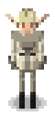
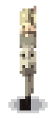
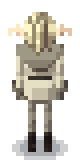

Halden Mure
The Black Synod's voice in the Isles.
Halden Mure: The Black Synod's voice in the Isles. Calm, kind and persuasive. He talks about rest, about an end to fear, about a power that will protect those who serve it.
History
Seen first at the end of Chapter I, on the ridge. He is Hollowed: the real Halden died decades ago, and a demon has worn him ever since. In Chapter V he knows exactly where Last Vigil is.
Description
The Black Synod's voice in the Isles. A gentle, persuasive Sylvani who speaks of rest and an end to fear. The real Halden died decades ago. A demon has worn him since.
Gallery





